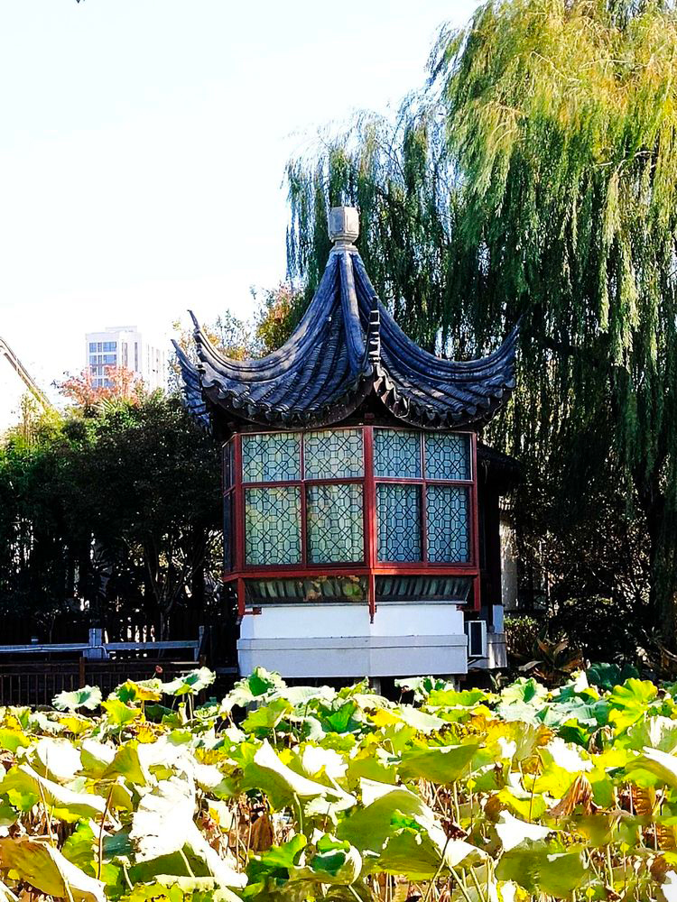
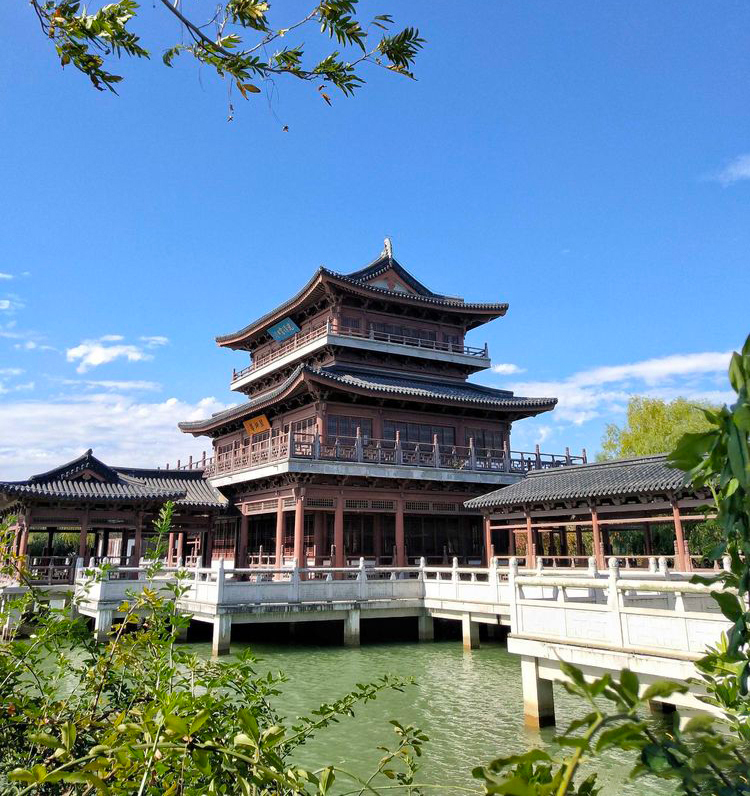
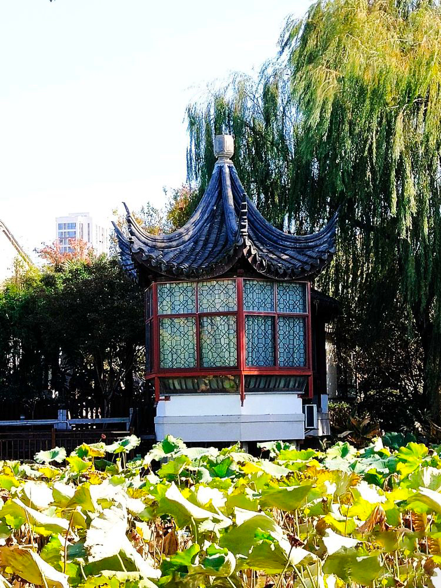
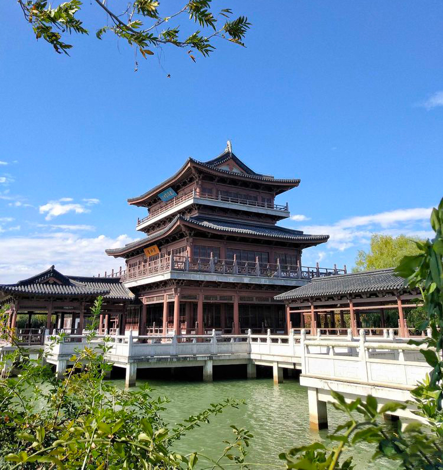
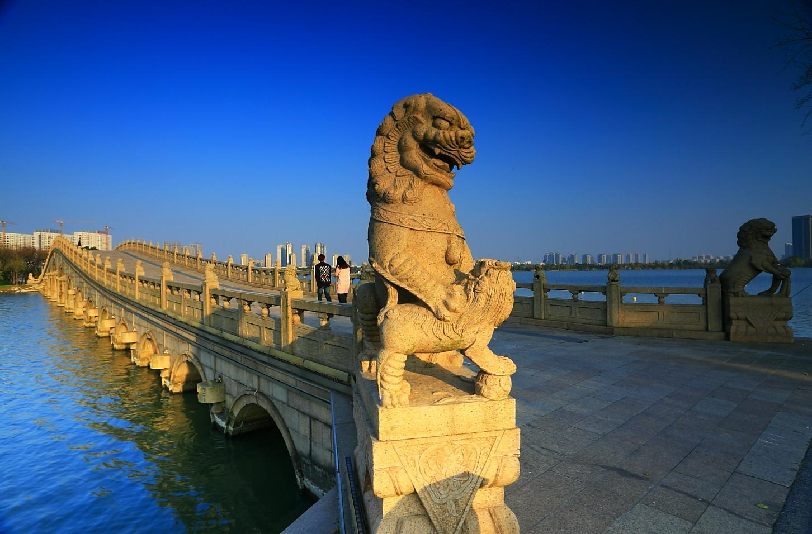
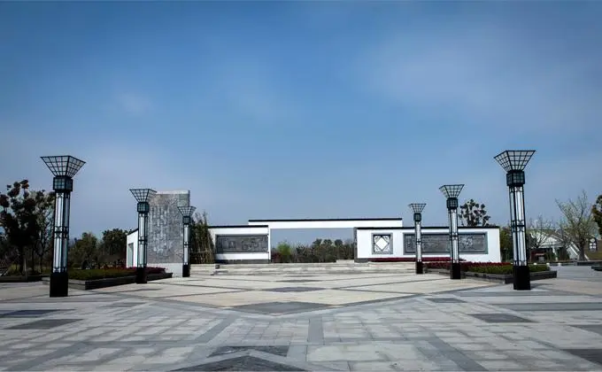

石湖
石湖简介/概述
 



“杭州有西湖之美，苏州有石湖之胜”。得天独厚的自然景观和历史久远的人文景观结合在一起，使“石湖佳山水”成为南宋著名田园诗人范成大所说的：“凡游吴而不至石湖，不登行春（桥名），则与未始游者无异”的“吴中胜境”，并享誉江南大地。
石湖景区是国家级太湖风景名胜区13个景区之一，距苏州古城区4.6公里，规划面积26.15平方公里。景区以田园风光和吴越遗迹为主线，是江南地区历史悠久、文化深厚、自然资源丰富的风景名胜地，也是苏州城市“四角山水”西南角的“绿肺”。石湖景区滨湖区域是景区中相对独立而完整的山水名胜观赏区。山水组合理想完美，景观丰富而多变化，山水相依，湖面开阔，峰峦重叠，形成十分秀丽的湖光山色，是整个景区精华所在。
石湖滨湖景区，规划面积5.64平方公里，水面面积2.56平方公里，分为东石湖、西石湖和南石湖三个湖面。吴堤、越堤、石堤、杨堤和范堤五堤长虹卧波于水面之上，东入口、石湖广场、层台清晓、梅圃溪堂、海棠春晓、四贤游湖、吴越潮音、南入口、天镜阁、桃花岛、七星伴月、渔城、野营岛、行春桥、越城桥、越城遗址、渔庄、荷花荡、北入口等主要景点贯穿其中，呈现一派“千顷一碧呈天镜”，“春日黄金嵌碧玉”的江南鱼米水乡风光。
景点景观
行春桥位于茶磨屿东，为横跨石湖北渚的九孔石桥，甚长，蜿蜒而平缓，俗称小长桥、九环洞桥。长54米，宽5.2米。行春之名来自中国民俗“行春”。行春桥八月十八观串月之民风流传至今，每年农历八月十八日，石湖有一年一度传统的“石湖串月”活动，石湖畔行春桥下湖中月影如半，会形成九月连珠之胜况。
百狮桥 百狮桥位于石堤处，横卧于西石湖和南石湖之间。桥栏杆上矗立着形态各异的小狮子八十几只，桥两端各伫立着两只大石狮子，分别为一公一母，因石狮子数量近百，故称之为“百狮桥”。百狮桥有桥孔十九个，大小不一，均匀分布，有时也称之为“十九孔桥”，百狮桥为石湖上高度最高的桥梁，可以观赏整个石湖的景色。
 石湖广场石湖广场位于石湖西路与友新高架交叉处的景区东大门。远远望去，石湖广场开阔平整，颇有气势。广场地面铺装了各种颜色的地砖，中间镶嵌部分青砖，显得古朴典雅。两排仿古式路灯矗立两旁。最引人注目的是广场背景墙，上有不少砖雕，栩栩如生地刻画了众多历史人物以及苏州的民俗民歌等，散发出浓浓的历史气息。
景区导览图
路线推荐
石湖滨湖景区东入口：如果是玩石湖东面的滨湖景区，就走友新高架，从石湖西路匝道下来，右拐就是石湖景区滨湖景区东入口停车场了，该停车场要收费的，滨湖景区免费的，可以坐观光浏览车围石湖一圈看看，也可以租双人自行车骑行，饱览石湖湖光山色。
石湖景区北入口：如果是玩石湖西面，参观上方山国家森林公园（苏州市植物园），车子可走友新高架，从宝带西路匝道下来，走宝带西路过石湖大桥，顺着景点指示牌走学府路就到上方山景区了，车子可停放在石湖景区北广场停车场，然后往南步行约400米，就到上方山国家森林公园了。